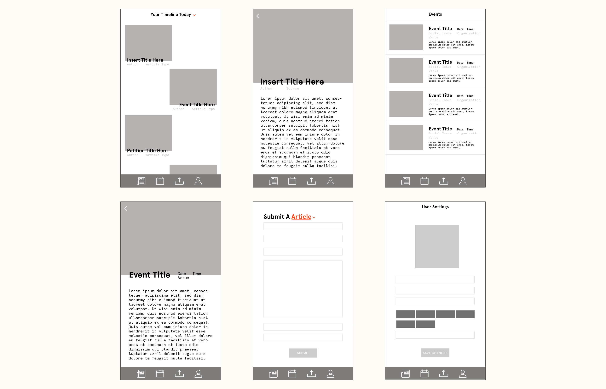

Perspective
Identity and Product Design
5 Week Project
Perspective is an editorial app that focuses on social impact issues which pulls articles from various sources and is also focused on user submitted content. The app was inspired by the lack of transparency and trust in media.


Perspective originally started out as a social impact engagement app. This was later changed to a news app based on my discussions with people on the lack of engagement and transparency in media.


Perspective builds a timeline based on the topics the user chooses based on a selection. Curating a list of topics that the user cares about. It pulls from a variety of new sources, organization pages, and user submissions.

User can submit a variety of article types to submit, this feature was included so users can have a role in sharing their stories and local issues.